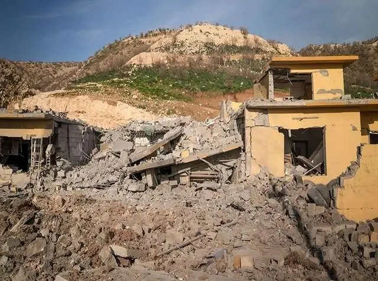
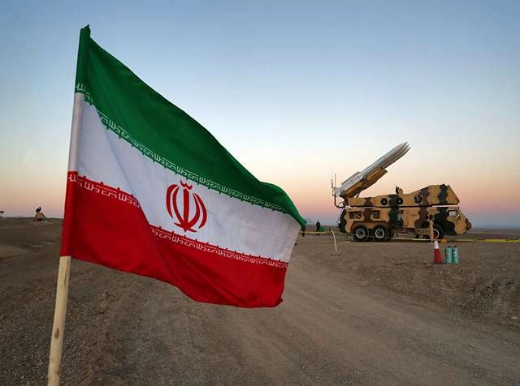
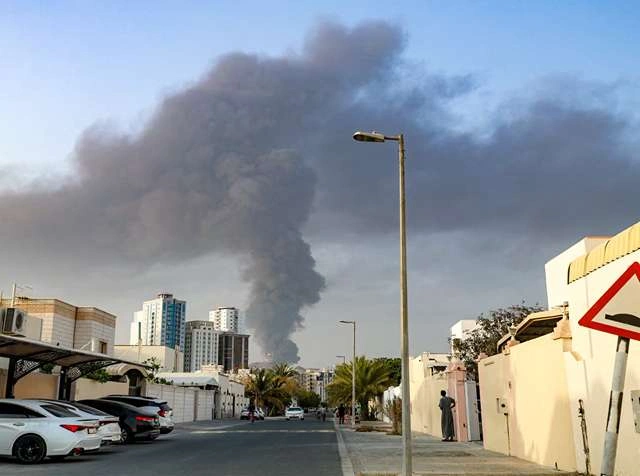

For years, the leaders and commanders of the Islamic Republic have been getting ready for this moment.They knew that their plans for the region could lead to a direct fight with Israel or the US, and that a war with one would almost surely bring in the other. The 12-day conflict last summer showed that trend. Israel attacked first, and the US followed a few days later.
In the most recent wave of fighting, they attacked Iran at the same time.It would be foolish to suppose that Iranian strategists were aiming for an easy triumph on the battlefield, given the US and Israel's better technology, intelligence, and military weapons.Iran seems to have instead created a strategy around deterrence and endurance. Over the past ten years, it has spent a lot of money on layered ballistic missile systems, long-range drones, and a network of allied armed organizations in the area.



It knows what it can't do: it can't reach US territory on the mainland, but it can reach US bases in the region, especially in neighboring Arab countries. Iranian missiles and drones may very easily reach Israel, and recent confrontations have shown that its air defense systems can be broken through. Every bullet that goes through those systems has both military and psychological weight.
Part of Iran's calculus is based on the costs of war. The US and Israel's interceptors cost a lot more than many of the one-way drones and missiles that Iran uses. The US and Israel have to spend up valuable resources to stop threats that are not very expensive because of the extended struggle.
Energy is another tool in the war economy
The Strait of Hormuz is still one of the most important places in the world for shipping oil and gas. Iran doesn't need to completely shut down the narrow Gulf canal. Even plausible threats and little disruptions have already raised prices, and if they keep happening, they may increase international pressure for de-escalation.
In this way, escalation becomes a way to make it more expensive to keep fighting Iran's enemies, not to win the war.
This leads us to attacks on countries next door
Missile and drone strikes on countries like Qatar, the United Arab Emirates, Kuwait, Oman, and Iraq seem to be meant to show that having US troops in those countries is dangerous.Tehran may hope that these governments will tell Washington to stop or limit its actions, but this is a risky bet. To escalate attacks much more could make them even more hostile and force these countries even more solidly into the US-Israel camp.
The war's effects could continue longer than the war itself, changing the way countries in the area work together in ways that make Iran more alone.
If the main goal is to stay alive, then making more enemies is a risky strategy. But from Tehran's point of view, moderation might also seem perilous if it shows weakness.
There are further questions now that we hear that local commanders may be choosing targets or firing missiles on their own.
If this is true, it doesn't necessarily mean that command structures are falling apart. Iran's military philosophy, especially in the Islamic Revolution Guard Corps (IRGC), has traditionally had decentralized parts to make sure that things keep going even when they are being heavily attacked.
It is possible to intercept and jam communication networks. People have been going for senior commanders. The US and Israel's air dominance makes it hard for central oversight to work. In these situations, pre-approved target lists and delegated launch power could be purposeful ways to protect against decapitation.
This system would help explain why Iranian forces have been able to keep going even after the deaths of high-ranking IRGC officials and even after the death of Ali Khamenei, Iran's supreme leader and commander-in-chief, in the first US-Israeli attacks on Saturday.
But decentralization has its own problems. Local commanders who don't have all the facts may hit targets they didn't mean to, such as neighboring states that wanted to stay neutral.
If there isn't a consistent operating picture, it's more likely that mistakes will be made. If this goes on for too long, it could also mean losing control and command.
In the end, it seems that Iran's strategy is based on the idea that it can take more punishment than its enemies are willing to take in terms of pain and costs.
If this is the case, then it is a planned escalation: persevere, retaliate, avoid utter collapse, and wait for political divisions to appear on the other side.
But there are limits to how long you can last. There aren't many missiles in stock, and production lines are always under attack. When mobile launchers are on the move, they are easy to hit, and it takes time to replace them.The same reasoning holds true for Iran's enemies.
Israel's air defense systems haven't always worked as they should. Every breach makes people more worried. The US needs to think about the possibility of regional escalation, the instability of the energy market, and the cost of keeping operations going for a long time.It seems like both parties think that time is on their side. Neither of them can be right.
The Islamic Republic does not need to win this war. It needs to stay up.The unsolved question is whether that goal can be reached without permanently pushing away its neighbors.